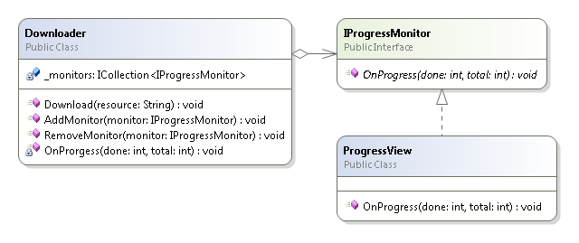
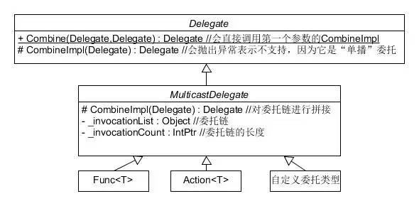

（点击上方蓝字，可快速关注我们）
来源：伯乐在线 - taney
链接：http://blog.jobbole.com/99738/
委托是C#区别于其他语言的一个特色，用它我们能写出简洁优雅的代码、能很方便的实现对象间的交互。
初学者可能会觉得委托体系很复杂：lambda表达式、语句lambda、匿名方法、委托、事件，光名词就一堆。其实这些只是C#编译器为我们提供的语法糖，在编译后它们都是MulticastDelegate类型的对象。而且从用途上讲主要也就两方面：将“方法对象化”和实现“观察者模式”，本文围绕这两方面，分享本人对委托中相关概念的理解，顺便介绍一些相关的其它东西。
闭包似乎在javascript里谈得比较多，其实只要支持定义”局部函数”的语言都会涉及到”闭包”的概念，像C++11的lambda、java的匿名内部类、Smalltalk的Block等。
在C#中也有闭包，比如下面这个简单的例子：
例1
int[] scores = { 100, 80, 60, 40, 20 };
var min = 60;
var passed = scores.Where((int i) => { return i >= min; });
这里向Count这个扩展方法传入了一个匿名方法，注意这里变量min对于这个匿名方法很特殊，它对匿名方法来说叫”自由变量（free variable）”（与之相对的叫”bound variable”），因为它不是该匿名方法的参数，也不是它的局部变量，这段代码能成功编译是因为从词法作用域的角度看，min这个变量对于匿名方法内部是可见的。
首先我们搞清一些概念：
scope：英语中有“视野”之义，表示符号名的可见范围。
extent：或叫lifetime，表示变量的一生。scope有时会影响extent。
JavaScript中的变量提升
关于这两者区别的一个例子就是javascript中的“变量提升”：
例2
text = 'global variable';
function test(){
alert(text);
//猜猜这里会弹出什么？
var text = "local variable";
};
test();
答案是弹出”undefined”。为什么？因为首先javascript是函数作用域，第二javascript中的局部变量名的scope贯穿整个函数，即函数中变量名在函数起始到结束范围内都是有效的，所以调用alert时text这个变量名被解析为局部变量，而这时还未执行到赋值语句，也就是局部text的extent还未开始，text只是个有效的变量名，并没有指向一个有效的对象，因此会弹出”undefined”。
好，我们继续
什么是词法作用域？
“词法作用域”也叫静态作用域(static scoping)，”词法”表示源代码级别，”静态”指发生在解释时/编译时（与之相对是运行时），根据字面可理解为“变量在源代码中的可见范围”。
因为是基于源代码的，所以看上去很符合我们的直观感受，大多数的编程语言，包括许多动态语言，都使用词法作用域的规则来进行标识符解析的。C#也不例外。
我们通常所称的“闭包”全称叫“词法闭包”，它是指存储了一个函数和创建该函数时所处词法环境的对象。在闭包中，它访问的外部变量叫做“被捕捉的变量（captured variable）”。比如上面例1中，第3行，匿名方法内部使用了min这个符号，但min既不是匿名方法的参数，也不是它的局部变量，所以编译器开始从定义这个匿名方法的词法环境开始向上不断搜索min这个符号，成功找到后，将它“捕捉”进匿名方法里，形成“闭包”，传递给Count方法的其实是这个“闭包”。
“捕捉”到底是什么意思？把它复制一份？还是保存它的引用？带着疑问猜猜下面C#代码的执行结果：
例3
class Program
{
static void Main()
{
foreach(var i in MakeClosures(3))
{
i();
//每次执行的结果是什么
}
Console.ReadKey();
}
static IEnumerableMakeClosures(int count)
{
var closures = new List();
for (var i = 0; i Add(() => Console.WriteLine(++i));
return closures;
}
}
我们来分析一下。首先，C#中的捕捉是“按引用捕捉”，所以：
在循环中创建闭包时捕捉的并不是i那个时刻的值，而是i的引用，是i这个对象本身，所以这些闭包共享同一个i
i在循环中不断更新，当第一个闭包被调用时i == count
所以这段代码的运行结果是”4,5,6″。
为什么循环结束了i还能被访问？因为它被捕捉到了闭包里，它的extent被延长到至少和闭包对象一样长。
大多数语言的闭包都是按引用捕捉（更符合直观感受），java比较非主流，它是按值捕捉（即复制，注意引用类型是复制引用）。所以请看下面的java代码：
public class Main{
public static void main(String[] args){
int i = 1;
Runnable runnable = new Runnable(){
@Override
public void run(){
i = 2;
}
};
runnable.run();
}
}
编译这段代码会报错：local variables referenced from an inner class must be final or effectively final，意思说”被内部类引用的局部变量必须由final修饰或实际上就是final的（就是自始至终都没有被重新赋值）”。
为什会这样呢？因为从直觉上看，这段代码执行runnable.run()后i应该变成2，但java是按值捕捉，i并不会变，为避免误解，所以Java语言规定被内部类访问的外部变量要是不可变。
要突破这一限制，我们可以“手动实现按引用捕捉”，即创建一个类，把需要修改的变量放到那个类里。
C++的lambda很灵活，它允许我们指定捕捉哪些变量、按值还是按引用捕捉。在构建闭包时，编译器生成一个重载了”()”操作符的类，把被捕捉的变量定义为它的成员。
C#编译器是如何实现闭包的？
CLR的类型系统中并没有“匿名方法”、“闭包”这些概念，其实C#编译器为我们生成了一些代码，比如生成一个类，把被捕捉的变量和匿名方法打包进去，变成实例变量和实例方法。但具体怎么实现并没有具体的标准，只要能符合语言规范就行，所以这个不必深究，有兴趣的自己可以用反编译工具查看一下。
观察者模式也叫”发布者/订阅者模式”是GoF设计模式中比较常用的一个，它是用来解决“一个对象需要在特定时刻通知n个其它对象”的问题的。
比如：mvc中model在自己属性发生改变时发布广播，事先关注了的view会收到并更新自已的状态，使界面与程序内部状态保持同步，同时又保持了内部逻辑与界面的良好分离。
这里我演示一个简单的例子：
实现一个下载程序，下载时能显示进度。为实现逻辑与界面的分离，我们设计两个类：
Downloader：下载器，用于执行下载任务
ProgressView：进度界面，显示进度条和百分比
那么问题来了，下载器如何通知界面更新？直接告诉它（调用它的一个方法）？如果这样么做的话下载器和界面的耦合度就会过高，这里我们可以运用“依赖倒置”的思想，加入一个IProgressMonitor接口。于是初步设计是这样的：

代码：
IProgressMonitor.cs
//进度监视接口
interface IProgressMonitor
{
void OnProgress(int done, int total);
}
ProgressVeiw.cs
class ProgressVeiw : IProgressMonitor
{
const int LENGTH = 50;
string _last = String.Empty;
public void OnProgress(int done, int total)
{
var builder = new StringBuilder();
builder.Append('[');
var filled = (int)(done / (total + 0.0) * LENGTH);
for (var i = 0; i Append(i ' : '_');
}
builder.Append(']');
if (done != total)
builder.AppendFormat(" {0:p0}", done / (total + 0.0));
else
builder.Append(" 完成！");
//回退之前打印的字符
for (var i = 0; i Length; ++i)
Console.Write('b');
var state = builder.ToString();
_last = state;
Console.Write(state);
}
}
Downloader.cs
class Downloader
{
public void Download(string resource)
{
for (int i = 1, size = 10; i this.OnProrgess(i, size);
Thread.Sleep(500);
}
}
public void AddMonitor(IProgressMonitor monitor)
{
this._monitors.Add(monitor);
}
public void RemoveMonitor(IProgressMonitor monitor)
{
this._monitors.Remove(monitor);
}
private void OnProrgess(int done, int total)
{
foreach (var i in this._monitors)
{
i.OnProgress(done, total);
}
}
private ICollection _monitors = new List();
//进度监视者集合
}
Program.cs
class Program
{
static void Main(string[] args)
{
var resouce = "visual studio.iso";
var downloader = new Downloader();
downloader.AddMonitor(new ProgressVeiw());
Console.WriteLine("正在下载 " + resouce);
downloader.Download(resouce);
Console.ReadKey();
}
}
整个逻辑是这样的：
创建下载器
ProgressView对下载进度“感兴趣”，就到下载器那“登记一下”
下载器开始下载
下载器下载过程进度有变化时就通知已登记了的对象，具体这些对象要干嘛，它不管，它只负责通知
ProgressView收到通知，更新界面
从代码中可以看到，实现“登记”、“通知”是通过手动操作一个集合实现的，其实这种功能.Net已经帮我们实现，那就是多播委托。
委托类层次图

.Net中所有具体委托类型其实都继承自MulticastDelegate，多播委托内部有一个数组，用来保存其它委托，这就是所谓的“委托链”，有了它就可以对多个委托进行组合，让一个委托可以一次执行多个操作。比如：
Action act = ()=>Console.WriteLine("动作1");
act += ()=>Console.WriteLine("动作2");
act += ()=>Console.WriteLine("动作3");
act();
//将打印出三行文字
这里编译器其实把+=操作符替换成了Delegate.Combine(Delegate a, Delegate b)方法，该方法内部又是直接调用第一个参数的CombineImpl方法。
因此多播委托的作用在于，现实观察者模式就不用手动维护一个订阅者集合了。于是上面的例子可以重构成这样：
Downloader.cs
class Downloader
{
public void Download(string resource)
{
for (int i = 1, size = 10; i this.OnProrgess(i, size);
Thread.Sleep(500);
}
}
//因为有多播委托，所以这里不需要“登记”、“注销”方法了
private void OnProrgess(int done, int total)
{
if (this.DownloadProgress != null)
this.DownloadProgress(done, total);
}
//NOTE: 这里为了用 +=,-=操作符替代“登记”、“注销”方法，不得以将订阅者集合暴露出去
public Actionint, int> DownloadProgress;
//进度回调链
}
删除IProgressMonitor接口，因为只需要委托签名匹配即可，不需要用接口来约束
Program.cs
class Program
{
static void Main(string[] args)
{
var resouce = "visual studio.iso";
var downloader = new Downloader();
downloader.DownloadProgress += new ProgressVeiw().OnProgress;
Console.WriteLine("正在下载 " + resouce);
downloader.Download(resouce);
Console.ReadKey();
}
}
注意上面Downloader.cs注释中的NOTE标记，在观察者模式中，发布者应该是它自己发布消息，而此处是public修饰，可以直接在外部调用，违背了观察者模式，因此我们需要使用事件来进行访问控制。
方法相当简单，只需要添加一个event关键字
//用event修饰，这样外部只能进行-=、+=操作，调用只能在本类内部进行
public event Actionint, int> DownloadProgress;
//进度事件
那事件和委托有什么区别？其实事件和属性一样，属语法糖，编译器会为我们生成访问器方法和实际的实例变量。
比如上面，编译器生成了Action成员，把事件的+=,-=转换为一对public的addXxx、removeXxx方法。
如果不想让编译器为我们自动生成委托成员，我们也可以手动实现，如：
public event Actionint, int> DownloadProgress
{
add
{
_downloadProgress += value;
}
remove
{
_downloadProgress -= value;
}
}
private Actionint, int> _downloadProgress;
所以事件的作用在于，实现观察者模式只需要用event关键字定义一个实例变量即可
C/C++中的函数指针与.Net中委托的区别在于
函数指针很“赤裸”，就是一个unsigned int类型的值，表示函数第一条CPU指令的内存地址
委托是比较复杂的CLR对象，内部封装了目标对象和方法指针，多播委托内部还维护了一个委托链
C++虽然没有内置观察者模式的实现，但许多第三方库如qt、boost都提供了“信号(signal)-槽(slot)”的功能。信号相当于.Net中的事件，槽相当于事件处理方法。
使用boost的signals2时需要注意的是，它实现的线程安全是指一个线程中添加、移除slot，不会影响另一个线程遍历slot集合。我们仍要注意对象被销毁的问题，比如一个slot在某线程中正在执行，而同时signal所属的那个对象在另一个线程被销毁了，这时访问那个对象会不会导致程序crash就要看运气了。
java没有匿名方法的语法，但可以用”匿名内部类 + 单方法接口”代替，java8对语法和api进行了扩展，引入了lambda，其实只是语法糖，本质还是接口。
有一些第三方类库提供了观察者模式的实现，比如：谷歌guava中的EventBus。
ruby语法非常丰富，这里介绍下它的block（代码块，一种匿名方法的语法：do |param| ...end 和 { |param| do_something param }，这个概念来自Smalltalk）。
我们在写程序时会经常需要实现“回调”的功能，即接收一个函数，然后在适当的时刻调用它，ruby直接原生支持了，任何方法都可以接收一个block作为隐式的参数，不用在参数列表中显式声明，在方法里可以用yield关键字调用传进来的block。如：
再比如核心库中的File::open方法
再看ruby的一个web框架Sinatra的API
用这种语法来写HTTP Web应用是不是很爽？因为这种API设计可以算是实现了一种HTTP的DSL（领域专用语言）了。
如果你喜欢这种风格，可以试试.Net的开源web框架Nancy，我已用她写了两个项目，API很实用，比ASP.NET MVC灵活。
这里简单展示一下她的特色：content negotiation（内容协商，根据客户端请求返回指定类型内容）
【今日微信公号推荐↓】

更多推荐请看《值得关注的技术和设计公众号》
其中推荐了包括技术、设计、极客 和 IT相亲相关的热门公众号。技术涵盖：Python、Web前端、Java、安卓、iOS、PHP、C/C++、.NET、Linux、数据库、运维、大数据、算法、IT职场等。点击《值得关注的技术和设计公众号》，发现精彩！
![]()